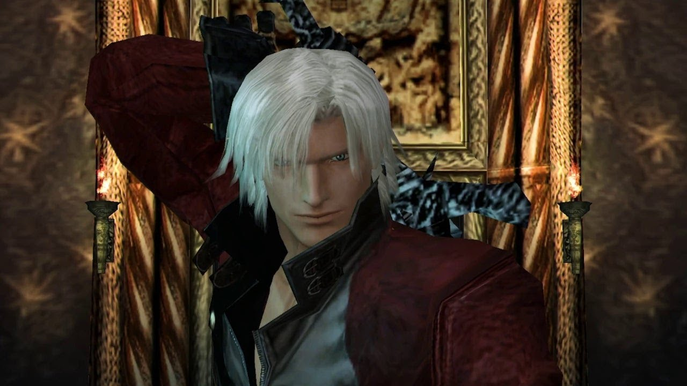

Jogabilidade
Devil May Cry 2 é um jogo de ação onde o jogador guia Dante ou Lúcia por um ambiente urbano, lutando contra uma abundância de demônios em um combate acelerado. O jogo em si consiste em missões com objetivos específicos na área de jogo do próprio jogo. O desempenho do jogador em cada missão é classificado de D a S com base no tempo necessário para completar a missão, a quantidade de Red Orbs coletados, o "estilo" geral exibido durante as lutas que ocorreram, o uso de itens e os danos sofridos. Em contraste com o resto do jogo, o sistema de julgamento de estilo usado no jogo foi citado como sendo o mais severo em termos de como ele julga o desempenho do jogador.
O combate em si é baseado no estilo que o jogador demonstra durante uma luta. A classificação que o jogador ganha por estilo é melhorada ao atingir os inimigos continuamente, evitando danos. Isso varia de "Don't Worry", progredindo para "Come On!", "Bingo", "Are You Ready?" e atingindo o pico em "Show Time !!". Se o personagem sofrer dano, o medidor de estilo volta para "Don't Worry".
Os controles de combate do jogo são visivelmente diferentes dos do primeiro jogo. Combos de armas corpo a corpo são baseados em pressionar o botão analógico em conjunto com o botão de ataque, ao invés de apenas no momento em que o botão de ataque é pressionado. A novidade na série é um botão de evasão, que permite a Dante ou Lúcia rolar, desviar de ataques inimigos ou correr ao longo de paredes. Outro novo recurso é um botão de troca de arma, que permite ao jogador alternar entre armas de longo alcance sem mudar para a tela de inventário.
O jogo também oferece resolução de quebra-cabeças e elementos de exploração. O jogo envolve o jogador examinando seus arredores para encontrar itens e orbes. Red Orbs são usados para atualizar armas ou comprar itens, o que lhes permite restaurar sua saúde danificada ou até mesmo reviver instantaneamente caso sejam mortos por um ataque inimigo.
A habilidade Devil Trigger permite que Dante e Lucia se transformem em uma forma demoníaca. Isso desbloqueia ataques especiais apenas do Devil Trigger, além de permitir que Dante e Lucia usem o poder de seus amuletos, o que também é um novo recurso da série. Exclusivo para este jogo é o Majin Form, uma forma aprimorada do Devil Trigger, disponível para Dante quando ele está com pouca saúde.
História
Devil May Cry 2 começa com Lúcia e Dante entrando separadamente em um museu onde um item importante chamado Arcana Medaglia está armazenado. Depois de derrotar um grupo de demônios no museu, Lúcia convida Dante para segui-la até Vie de Marli, onde é apresentado a Matier, sua mãe. Matier explica que uma vez ela lutou ao lado do pai de Dante, Sparda, para defender a ilha contra os demônios. Ela pede a Dante para ajudar a lutar contra Arius, um empresário internacional que usa o poder demoníaco e busca conquistar o mundo. Dante joga uma moeda como resposta e decide ajudar quando a moeda dá cara. Depois que Dante sai, Matier e Lúcia discutem os Arcanos, os itens necessários para Arius liberar Argosax.
Lúcia finalmente confronta Arius, que revela que ela foi sua criação. Quando Lucia se move para atacar Arius, ele usa sua magia para explodi-la. Pouco depois, Dante se encontra com Lúcia, que lhe dá o último dos Arcanos antes de partir. Dante então encontra Matier e tenta passar os Arcanos para ela. Matier, por sua vez, pede a Dante que leve os Arcanos para salvar Lúcia, que foi lutar com Arius novamente. Dante joga a moeda novamente para decidir se vai ajudar, ele cai em cabeças, e ele parte para ajudar Lúcia. Enquanto isso, Lúcia entra no prédio Uroboros e ataca Arius, que a captura. Dante chega e troca os Arcanos por Lúcia, então ataca Arius. Para escapar, Arius força Dante a decidir entre salvar Lúcia ou matá-lo.

Lúcia, preocupada com o ritual e em conflito consigo mesma, se pergunta como eles vão impedir Arius. Dante acena para ela, afirmando que encontrará um caminho. Dante deixa Lúcia pensar enquanto ele parte para derrotar Arius. Matier chega pouco tempo depois, deixa Lúcia à vontade e decide voltar à luta contra Arius. Dante chega para encontrar Arius no meio de seu ritual de indução à imortalidade. Aparentemente nada afetado pela conclusão da cerimônia, Dante está confiante. Outra luta começa, na qual Dante acaba com Arius com suas pistolas. Lá fora, Lúcia confronta Dante e exige que ele a mate porque teme que ela mesma se torne um demônio. Antes que o problema seja resolvido, um grande fluxo de energia atinge a torre e um portal para o mundo dos demônios é aberto. Dante e Lúcia discutem sobre quem vai entrar e fechar por dentro, Dante se oferece para deixar a questão ao destino. Ele vira a moeda e mais uma vez cai em cara, deixando Dante entrar no portal para lidar com Argosax depois de deixar a moeda com Lúcia.
Após a partida de Dante, Arius retorna à vida com poder demoníaco. Enquanto Lúcia luta com Arius, ele se encontra ferido e tenta distraí-la, uma tática que falha, Lucia segue em frente para derrotá-lo. Dentro do portal, Dante luta e derrota o Argosax parcialmente convocado. Encontrando o portal fechado, Dante, ao invés disso, dirige ainda mais para o reino dos demônios em uma motocicleta. No rescaldo da batalha, Matier tenta tranquilizar Lúcia sobre o destino de Dante, insistindo que Sparda voltou de uma viagem semelhante. Lúcia examina a moeda que Dante deixou com ela e descobre que os dois lados são idênticos. Algum tempo depois, na loja de Dante, Lúcia reflete sobre Dante e como Sparda, tendo feito exatamente a mesma viagem para o inferno, voltou. Lá fora, o som de uma motocicleta ecoa e Lúcia sai para investigar quem é, sendo obviamente Dante.